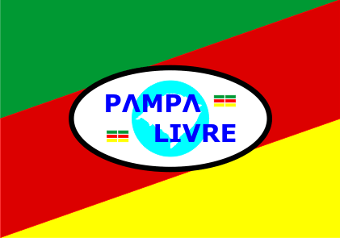

| REPÚBLICA
RIO-GRANDENSE |
| Um Movimento fundado em Fevereiro de 1990 que rompe o Tratado do Ponche Verde por desrespeito, invasão e ocupação do Território Gaúcho pelos carrascos brasileiros. |
|
www.PampaLivre.info |
a b c d e f g h I k l m n o p q r s t a d f g h y t r